Hypothesis Testing for One Population
Inferential Statistics
Statistics
Descriptive
Inferential
- Collecting (Mining) Data
- Processing Data
- Visualizing Data
- Summarizing Data
- Making inferences and
drawing conclusions
from data
Inferential Statistics
- Inferential Statistics: the process of making judgments about a population based on properties of a sample randomly drawn from the population
- Estimation: involves approximating the unknown value of a parameter
- Point Estimate Ex: \(\bar{x} = 4.50\)
- Confidence Interval Ex: 95% Confident that \(3.50 < \mu < 5.50\)
- Hypothesis Testing…
- Estimation: involves approximating the unknown value of a parameter
Mathematical vs Statistical Difference
- Mathematical Difference: simply the mathematical difference/distance between objects also called euclidean distance
Example
Consider the numbers 4.3 and 4.2. What is the a mathematical difference between the numbers?
Just 0.10 i.e. 4.3 - 4.1
Basketball Difference Example
Basketball Example
Consider a basketball game between the Texas and A&M. We want to guess who will win based off points scored and time left in the game.
vs
Basketball Difference Example Cont.
Texas points
A&M points
Time
Winner Guess
- 22
20
End \(1^{\text{st}}\) Q
? Too much time & points too close
- 102
100
1 minute left
UT? Points close, but less time left
- 102
100
1 second left
Almost definitely UT. Points close, but no time left
- Every scenario had a mathematical difference of 2 points
- BUT, that was not all we considered!
2 point difference
2 point difference
2 point difference
Interpretation
To guess who would win, we had to consider the points (math difference) AND the time left (variability) i.e. the statistical difference
Differences Examples Cont.
Ramen Example
Suppose we are wanting to pick which ramen package we buy for dinner. Consider the two scenarios.
Price: $0.50
Difference?
1.Broke College Student:
Yes, big ($) difference!
2.Elon Musk:
No
Price: $4.50
- Differences are only meaningful relative to something!
Mathematical vs Statistical Difference Cont.
Reminder
Different samples may produce different results due to sampling variability
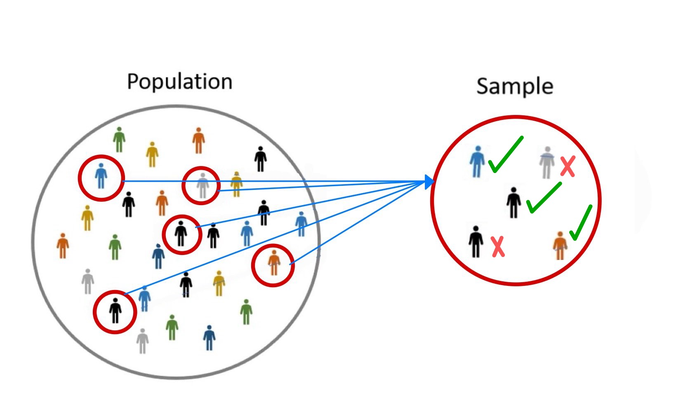
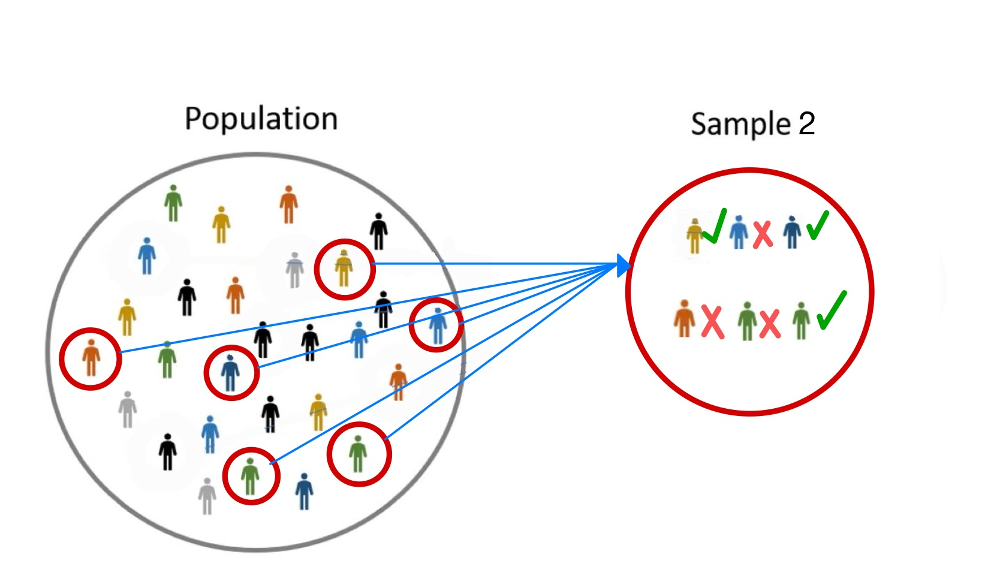
- In statistics, we use variability as a reference for determining a meaningful difference
- Statistical Difference: The difference between objects relative to the variability.
Hypothesis Testing Introduction
- Statistical Significance: We say something is statistically significantly different if there is a large enough difference GIVEN the variability
- Hypothesis Testing: involves choosing between opposing statements often concerning a parameter
- Is something different than claimed or assumed to be true?
- Has a parameter changed?
- That is, is something statistically significantly different?
- Hypothesis Testing Use Cases:
- Pharmaceuticals/Drug Approval
- Medical Procedure Approval
- Genetic association
- Product Control
- Marketing Strategies
Motivating Example
———- Example
According to Chips Ahoy, the mean number of chocolate chips
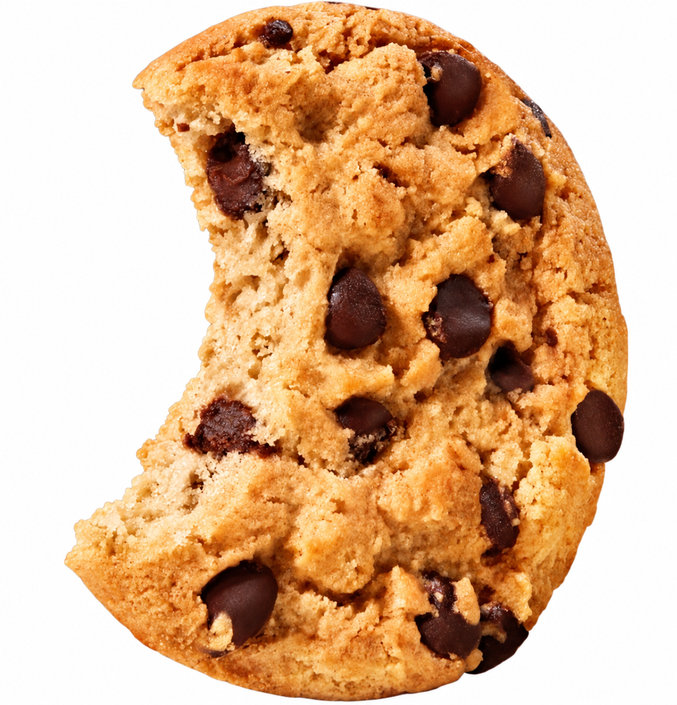
in a chewy Chips Ahoy cookie is 25 and the standard deviation is 4. Suppose those in SDS 320E really love chocolate chips and they always count how many chocolate chips are in every Chips Ahoy cookie they eat. After many cookies, they begin to complain that there are not enough chocolate chips. That is, they believe the true mean number of chocolate chips is less than 25.- What is the parameter of interest?
\(\mu\) = mean number of chocolate chips in chew Chips Ahoy
- What does claim to be true about this parameter?
\(\mu\) = 25
- What does those in SDS 320E think is true about this parameter?
\(\mu\) < 25
Motivating Example Cont.
———- Example
According to Chips Ahoy, the mean number of chocolate chips in a chewy Chips Ahoy cookie is 25 and the standard deviation is 4. Suppose those in SDS 320E really love chocolate chips and they always count how many chocolate chips are in every Chips Ahoy cookie they eat. After many cookies, they begin to complain that there are not enough chocolate chips. That is, they believe the true mean number of chocolate chips is less than 25.
- If we want to access whether Chips Ahoy claim may not be true, what might we do?
Take a sample of Chips Ahoy cookies and calculate the mean number of chocolate chips to compare it to Chips Ahoy’s claim that \(\mu\) = 25
Motivating Example Cont.
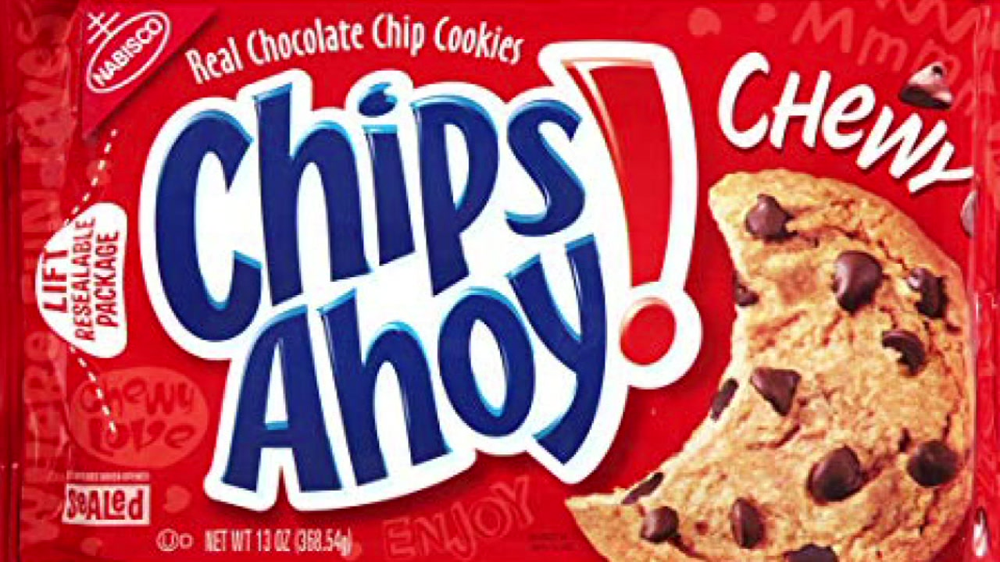
Our Real Data
Our Real Data Cont.
- For our sample, we found a total of 150 chocolate chips,
\(\quad\) [1] 150
\(\quad\) and we had a total sample size of n = 9.
\(\quad\) [1] 9
- Thus, our sample mean is
\(\bar{x}\) = 150/9 = 16.67 chocolate chips
Mathematical vs Statistical Difference
Reminder
Chips Ahoy claims the true mean number of chocolate chips is \(\mu\) = 25. We test this by taking a sample and comparing our sample mean to 25.
- Chips Ahoy claims that the true mean number of chocolate chips is \(\mu\) = 25 and for our sample we found that \(\bar{x}\) = 16.67
- Thus, the mathematical difference is 25 \(-\) 16.67 = 8.33
- Is this difference large or small?
Maybe, maybe not? Again, a difference is only meaningful relative to something!
Hypothesis Testing Example Cont.
Idea behind Hypothesis Testing
When performing a hypothesis test, what we are trying to decide is, if the true value of the parameter is as claimed i.e. the true mean number of chocolate chips in a chewy Chips Ahoy cookie is \(\mu\) = 25, then GIVEN the variability, is it likely or unlikely for our sample to find that \(\bar{x}\) = 16.67?
- That is, is \(\bar{x}\) = 16.67 statistically significantly different from \(\mu\) = 25?
- Note: We already have all of the tools to determine this!
- We will use:
- 1.\(\text{ }\)The distribution of \(\bar{x}\), and
- 2.\(\text{ }\)Probability
Distribution of Sample Mean \(\bar{x}\)
Central Limit Theorem (CLT)
Let \(X\) have the mean \(\mu\) and standard deviation \(\sigma\), then for a “sufficiently large” sample size \(n\), the sample mean \(\bar{x}\) has the distribution \[ \bar{X} \overset{\bullet}{\sim} N(\mu, \sigma/\sqrt{n}). \]
- What must be true in order for this to be the distribution of \(\bar{X}\)?
We have a “sufficiently large” sample size. A crude criterion is \(n \geq 30\).
Distribution of Sample Mean \(\bar{x}\) Cont.
Reminder
Chips Ahoy claims the true mean number of chocolate chips is \(\mu\) = 25 and the standard deviation is \(\sigma\) = 4. We took a sample of size n = 9.
- Thus, the sampling distribution of \(\bar{X}\) is
\(\bar{X} \overset{\bullet}{\sim} N(\mu, \sigma/\sqrt{n}) = N(25, 4/\sqrt{9})\)
\(n = 9 \geq 30\)

Distribution of Sample Mean \(\bar{x}\) Cont.
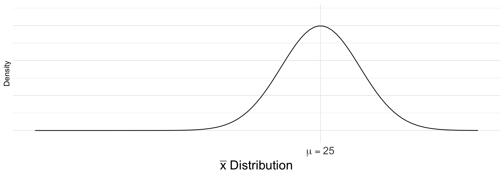
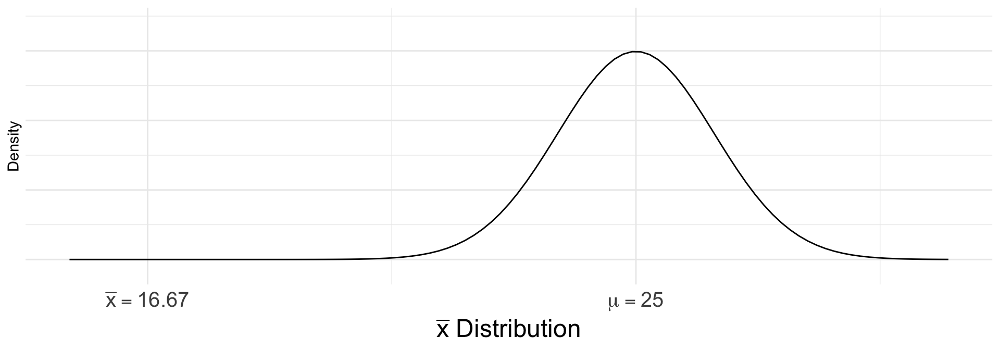
- To see how likely it is to get \(\bar{x}\) = 16.67, we can find the
probability

Probability of \(\bar{x}\)
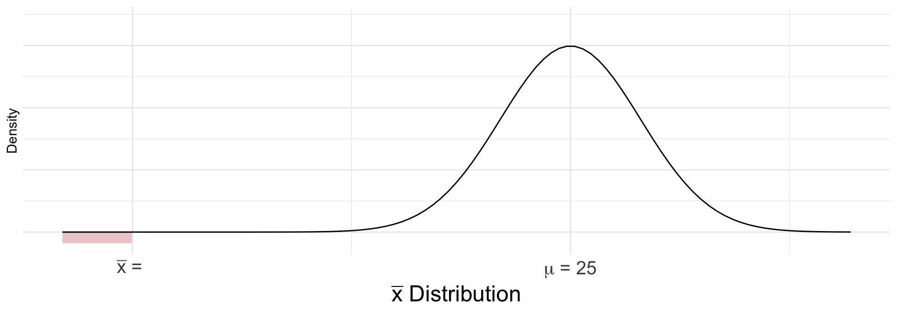
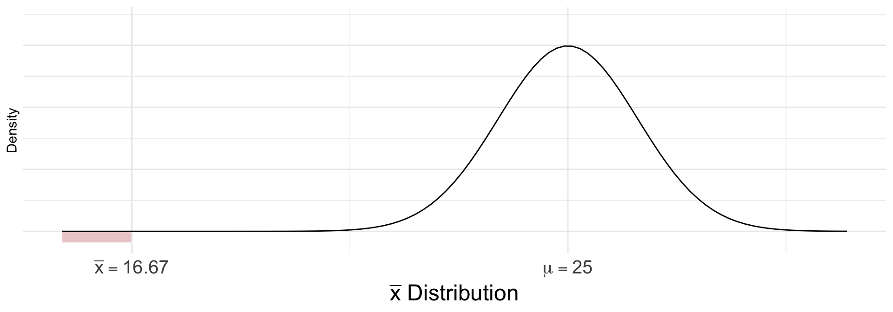
- To find \(P(\bar{X} \leq 16.67)\), we compute the z-score z-score = \(\frac{data - mean}{st. dev.}\)
\[ z = \frac{16.67 - 25}{4/\sqrt{9}} = -6.25 \]
- What is the Distribution of \(Z\)?
\(Z \stackrel{\bullet}{\sim} N(0, 1)\)

Probability of \(\bar{x}\) Cont.
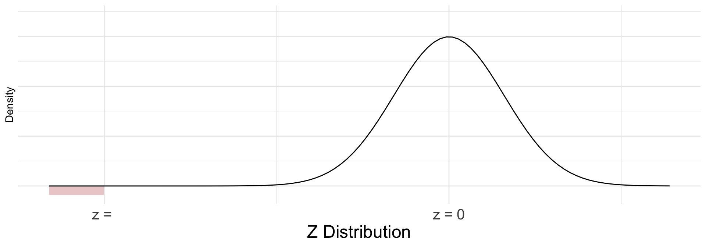
- Thus, we have
\(P(\bar{X} \leq 16.67) = P(Z \leq -6.25)\) =
\(P(\bar{X} \leq 16.67) = P(Z \leq -6.25)\) = \(2.0522634\times 10^{-10}\) from z-chart or pnorm() in R
Probability of \(\bar{x}\) Cont.
- We have \(P(\bar{X} \leq 16.67) = 2.0522634\times 10^{-10}\)
- How do we interpret this probability?
- If Chips Ahoy’s claim is true that the mean number of chocolate chips is \(\mu\) = 25, then there is a \(2.0522634\times 10^{-10}\) chance that we would get \(\bar{x}\) = 16.67.
But, we did get \(\bar{x} = 16.67\)! And we know we took a valid sample.
- Thus, what does this small probability tell us about Chips Ahoy’s claim?
It tells us that their claim most likely is incorrect. That is, we have sufficient evidence to reject their claim.
We have just performed a hypothesis test! That is, we have tested a claim and reached a conclusion.
More on the P-Value
- P-value: The probability of getting what we got or more extreme, while assuming the Null Hypothesis (\(H_{0}\)) is true
- Note: The p-value is NOT the probability that \(H_{0}\) is true most common incorrect interpretation
- The p-value we found was very small, but generally, how do we define very small?
- Level of Significance (\(\alpha\)): The probability we reject a true \(H_{0}\) Probability of a type-I error
- Most researchers set \(\alpha\) at a fixed value and it is the risk we are willing to take of rejecting a true \(H_{0}\) Thus, we will compare the p-value to \(\alpha\)
- Conclusions:
- If the p-value \(< \alpha\), then we say we have sufficient evidence to Reject \(H_{0}\).
- If the p-value \(> \alpha\), then we do NOT have sufficient evidence to reject \(H_{0}\). Thus, we say we Fail to Reject \(H_{0}\). Note: We do not say we accept \(H_{0}\) or \(H_{0}\) is true
Note: The p-value is not the only way to reach a conclusion in a hypothesis test, but it will always lead to the same conclusion as other methods
Hypothesis Testing Formalized
Hypotheses
- Hypothesis Testing: involves choosing between opposing statements often concerning a parameter
- Null Hypothesis (\(H_{0}\)): The hypothesis that is assumed or claimed to be true
- For our class, the null hypotheses we will learn will be strict equalites
- Ex: \(\mu = 5,\ p = 0.20, \mu_{1} = \mu_{2}\), ect.
- Alternative Hypothesis (\(H_{a}\)): The hypothesis that is often answers our research question or what we want to know
- For our class, the alternative hypotheses we will learn will be strict inequalities
- Ex: \(\mu < 5, \mu > 5, \mu \neq 5, \mu_{1} > \mu_{2}\), ect.
- Null Hypothesis (\(H_{0}\)): The hypothesis that is assumed or claimed to be true
Step 1: State your hypotheses
Test Statistics
- Test Statistics: the statistic for the hypothesis test that represents our observed data, while adjusting for variability i.e. the statistical difference
- General form for one population test:
\[\text{Test Statistic} = \frac{\text{Observed} - \text{Hypothesized}}{\text{Standard Error}}\]
The exact formula for the test statistic will depend on the type of data and the hypothesis test being performed
- The Test Statistic will follow a specific sampling distribution i.e. TS \(\sim\) some distribution
- The distribution will tell us what values of the test statistic are likely or unlikely GIVEN the \(H_{0}\) is true
- The test statistic only follows this distribution under certain assumption(s)
Step 2: Find the Test Statistic and Specify its Distribution
Assumptions
Reminder
All of our results (confidence interval, p-value and ect…) are based upon certain assumptions
- If the assumptions are not true, then generally the results are not valid or cannot be trusted!
- Thus, we must ALWAYS verify our assumptions are reasonably met
- If distributional assumptions are not reasonable, transformations such as the log and others may help Box Cox is another popular transformation
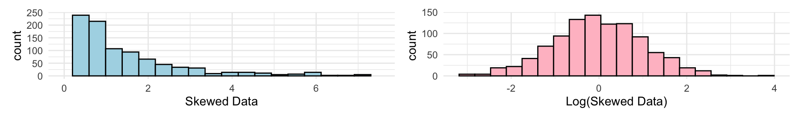
Important
If our assumptions are not met, we can not just proceed like nothing happened! We need to try remedies or consider other test/methods that fit our scenario.
Concluding a Hypothesis Test
- There are multiple ways to reach a conclusion for a hypothesis test
- P-value
- Rejection Region
- Confidence Interval(s) note: intervals are often used in tandem with hypothesis test
- All of these methods MUST and will reach the same conclusion
- Every method ends with one of two decisions about \(H_{0}\):
- Reject \(H_{0}\): we have sufficient evidence against the claim
- Fail to Reject \(H_{0}\): we do NOT have sufficient evidence against the claim Note: We do not say we accept \(H_{0}\) or \(H_{0}\) is true
Step 3: Use one of these methods and make a conclusion
Issues with Concluding a Hypothesis Test
- Since our conclusion is based on one sample, we CAN make a mistake
- There are two types of errors we could make
- There are two types of errors we could make
The Truth
| \(H_{0}\) is True | \(H_{0}\) is False | |
|---|---|---|
| Reject \(H_{0}\) | Type I Error | Correct Decision |
| Fail to Reject \(H_{0}\) | Correct Decision | Type II Error |
Decision Made
- Type I Error: Rejecting \(H_{0}\) when \(H_{0}\) is actually true
- The probability of a Type I error is the level of significance (\(\alpha\))
- Type II Error: Failing to reject \(H_{0}\) when \(H_{0}\) is actually false
- The probability of a Type II error is denoted \(\beta\)
- Power: The probability of correctly rejecting a false \(H_{0}\) (what we “want”). Power = 1 - \(\beta\)
Methods for Concluding a Hypothesis Test: P-value
- P-value: the probability of getting what we got or more extreme, assuming \(H_{0}\) is true
- The direction of “more extreme” depends on the type of test:
Right Tailed
\(H_{a}:\) parameter \(>\) value

Left Tailed
\(H_{a}:\) parameter \(<\) value

Two Tailed
\(H_{a}:\) parameter \(\neq\) value

- We compare the p-value to \(\alpha\)
- If p-value \(< \alpha\), Reject \(H_{0}\)
- If p-value \(> \alpha\), Fail to Reject \(H_{0}\)
Methods for Concluding a Hypothesis Test: Rejection Region
- Rejection Region: the set of test statistic values that are extreme enough for us to reject \(H_{0}\) i.e. a cutoff/treshold value for rejecting \(H_{0}\)
- The location of the rejection region depends on the type of test:
Right Tailed
\(H_{a}:\) parameter \(>\) value

Left Tailed
\(H_{a}:\) parameter \(<\) value
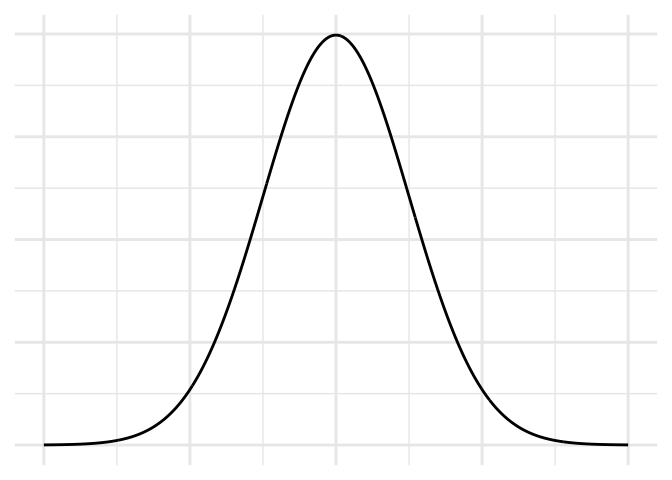
Two Tailed
\(H_{a}:\) parameter \(\neq\) value

- We check whether the test statistic falls in the rejection region
- If the test statistic is in the rejection region, we Reject \(H_{0}\)
- If the test statistic is not in the rejection region, we Fail to Reject \(H_{0}\)
“Effect Size” for Hypothesis Test Motivation
Example
Suppose one is interested in determining if there is a difference between the mean SAT scores for the genders Male and Female. For \(H_{0}\), we assume that there is no difference in SAT scores between genders. That is,
\[H_{0}: Mean\ SAT_{Female} = Mean\ SAT_{Male}\]
If we reject \(H_{0}\), what does that tell us?
There is sufficient evidence to conclude that the mean SAT scores between Male and Female are not the same.
Because we rejected \(H_{0}\), what would we naturally be interested in?
Estimating the mean SAT scores for the genders and determing which one is higher
“Effect Size” for Hypothesis Test: Confidence Intervals
- Effect size: a measure of how big the difference (or effect) is for a relationship i.e. the practical difference
- A hypothesis test only tells us IF the parameter differs from the hypothesized value, not by how much
- A confidence interval estimates the plausible values of the parameter. Thus, it gives us a measure like an “effect size”
- The form of the interval depends on the type of test:
Right Tailed
\(H_{a}:\) parameter \(>\) value
\[\text{parameter} > LB\]
Lower bound only
Left Tailed
\(H_{a}:\) parameter \(<\) value
\[\text{parameter} < UB\]
Upper bound only
Two Tailed
\(H_{a}:\) parameter \(\neq\) value
\[LB < \text{parameter} < UB\]
Lower and upper bound
Note: We could also use a confidence interval to make a conclusion for a hypothesis test
Practical vs Significant Difference
Example
A school district proposes a new teaching method to increase reading comprehension for students. Students in the district currently average 70 points on a 100 point reading comprehension exam. The new method is tried on a random sample of 5,000 students, and the school district wants to determine the new method yields an significant increase in reading comprehension for students.
- Suppose \(\alpha\) is set to 5%. The school performs a hypothesis test and finds the p-value = 0.02. What is the conclusion?
We Reject \(H_{0}\). There is sufficient evidence that the new method increases the mean score.
- Should we implement the new teaching method?
Important
Practical vs Statistical Difference: Just because we find a significant statistical result does not mean the difference is large enough to matter in practice we need an effect size
Hypothesis Test for One Population Mean
Review of Chips Ahoy Example
- For the example for one population mean, we used the following:
- We used the CLT, \(\bar{X} \sim N(\mu, \sigma/\sqrt{n})\) for the sampling distribution
- Our test statistic was the z-score
\[Z = \frac{\bar{X} - \mu}{\sigma /\sqrt{n}}\]
Reminder
For the hypothesis test, we conducted it because we did not know the true value of the mean \(\mu\)
Thus, what is the issue with our test statistic/z-score?
If we do not know \(\mu\), then is is very unlikely that we know \(\sigma\)!
Thus, we will need to estimate \(\sigma\) with \(s\), the sample standard deviation
Hypothesis Test for One Population Mean
t-Test
To conduct a hypothesis test for one population mean, we will use the t-Test:
Null and Alternative Hypothesis
\(H_{0}: \mu = value\)
\(H_{a}: \mu < value\), \(> value\), or \(\neq value\)
Test-Statistic and Distribution
\(t\) \(= \frac{\bar{X} - \mu}{s/\sqrt{n}}\) \(\sim t(df = n - 1)\)
Assumption for t-Test: Normality (check with QQ-Plot)
- To determine the p-value, we can use the
pt()function in \(\texttt{R}\) with our test-statistic (t)- Or, we can use the
t.test()
- Or, we can use the
- To determine the Rejection Region, we can use the t-Table link with \(\alpha\)
- To determine the “effect size”, we can calculate the t-confidence interval based upon \(H_{a}\) i.e. UB only, LB only, or both bounds
T-test Example
Example
A fitness guideline says the mean resting heart rate for adults is 72 beats per minute. A researcher suspects that adults who exercise regularly have a lower mean resting heart rate. She takes a random sample of 16 adults who exercise regularly and records their resting heart rates. The sample has a mean of \(\bar{x}\) = 68.5 beats per minute and a standard deviation of \(s\) = 7 beats per minute. A QQ-plot of the data shows no strong departure from normality.
- What are the null and alternative hypotheses?
\(H_{0}: \mu = 72\)
\(H_{a}: \mu < 72\)
- What is the Test-Statistic?
T-test Example Cont.
Example
A fitness guideline says the mean resting heart rate for adults is 72 beats per minute. A researcher suspects that adults who exercise regularly have a lower mean resting heart rate. She takes a random sample of 16 adults who exercise regularly and records their resting heart rates. The sample has a mean of \(\bar{x}\) = 68.5 beats per minute and a standard deviation of \(s\) = 7 beats per minute. A QQ-plot of the data shows no strong departure from normality.
3a. Using the qt() function in \(\texttt{R}\), find the p-value and make a conclusion
T-test Example Cont.
Example
A fitness guideline says the mean resting heart rate for adults is 72 beats per minute. A researcher suspects that adults who exercise regularly have a lower mean resting heart rate. She takes a random sample of 16 adults who exercise regularly and records their resting heart rates. The sample has a mean of \(\bar{x}\) = 68.5 beats per minute and a standard deviation of \(s\) = 7 beats per minute. A QQ-plot of the data shows no strong departure from normality.
3b. Alternatively, find the Rejection Region and make a conclusion
- Determine the “effect size” by constucting a confidence interval
t-Test in R
- To conduct a t-test for \(\mu\) in R, we can use the
t.test()function. It has the following arguments:x: the numeric vector of datamu: the hypothesized value of the mean in \(H_{0}\) (default is 0)alternative: the form of \(H_{a}\), either"less","greater", or"two.sided"(default is"two.sided")conf.level: the confidence level of the interval (default is 0.95)
t.test()returns a lot of output, so we can use$statistic,$p.value, and$conf.intto extract only what we need
The End

Derik Boonstra, Ph.D.